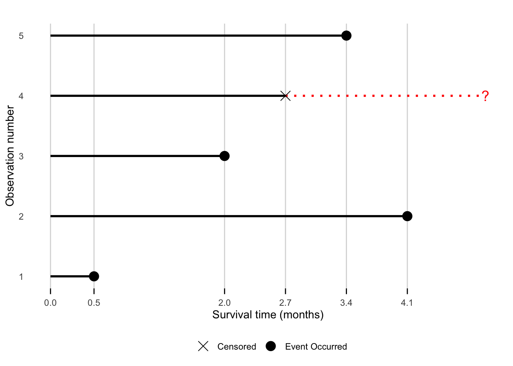
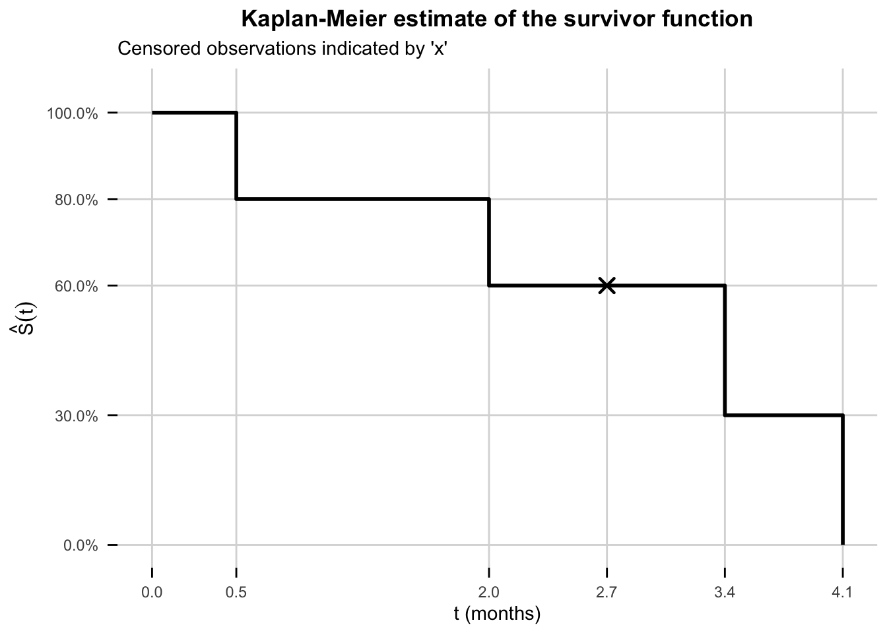
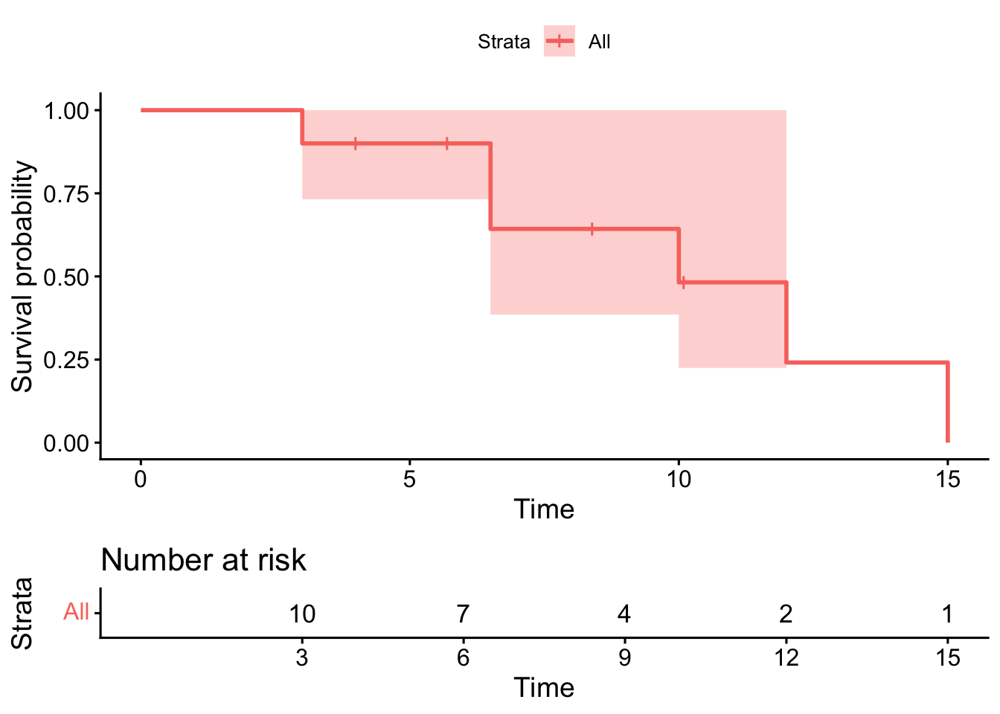

We now introduce one commonly-used technique for estimating a survivor function: the Kaplan-Meier estimate. Plots of Kaplan-Meier estimates are usually included in journal publications of clinical trial results, for trials involving survival data. We will also introduce one hypothesis test for comparing two survivor functions: the log rank test.
5.1 Preliminaries
You may have seen before how to estimate a cumulative distribution function \(F(t)\) using the empirical distribution function. We can obviously use the same idea to estimate a survivor function \(S(t)=1-F(t)\). The method is
obtain a sample of values \(t_1,\ldots,t_n\) from the distribution of \(T\)
estimate the survivor function \(S(t) = P(T\ge t)\) for any value of \(t\) by counting the proportion of values in the sample \(t_1,\ldots,t_n\) that are greater than or equal to \(t\).
TipExample
We will test the method above in R to estimate \(S(1)=P(T\ge 1)\) where \(T\sim exp(rate = 1)\):
# fix the random seed so you can reproduce thisset.seed(123) # generate a sample of 1000 random observations from the exp(rate = 1) distributiont_sample <-rexp(n =1000, rate =1)# count how many observations in the sample are greater than or equal to 1# and divide by 1000 to get the proportionsum(t_sample >=1) /1000
[1] 0.393
# compare with the true value of the survivor function:1-pexp(1, rate =1)
[1] 0.3678794
Note
This approach, on its own, won’t work if the sample of observations includes censored data!
5.1.1 The factorisation method
We will see later that it can be convenient to estimate a survival probability via a factorisation. As an example, if we want to estimate \(S(2)\), we can write
Suppose we have a sample of survival times \(t_1,\ldots t_n\) from the distribution of \(T\)
We estimate \(S(1)\) exactly as before
We estimate \(P(T\ge 2|T\ge 1)\) by counting the proportion of observations in our sample greater than or equal to 2, out of those observations which are greater than or equal to 1.
We multiply the estimates from steps 2 and 3 to get an estimate of \(S(2)\)
This may seem unnecessarily complicated, but it will be useful for handling censored observations in our sample.
TipExample
We illustrate the above approach in R, again with \(T\sim exp(rate = 1)\) for illustration.
# fix the random seed so you can reproduce thisset.seed(123) # generate a sample of 1000 random observations from the exp(rate=1) distributiont_sample <-rexp(1000) # count how many observations in the sample are greater than or equal to 1# and divide by 100 to get the proportionp1 <-sum(t_sample >=1) /1000# Extract observations in the sample are greater than or equal to 1t_sample_above_1 <- t_sample[t_sample >=1]# count how many observations in the reduced are greater than or equal to 2# and divide by the sample size to get the proportionp2 <-sum(t_sample_above_1 >=2) /length(t_sample_above_1)# Multiply to estimate the desired probabilityp1 * p2
[1] 0.137
# Compare with the true value of the probability1-pexp(2, rate =1)
[1] 0.1353353
5.2 Kaplan-Meier estimate of \(S(t)\)
As an example, suppose we have 5 observations: event times (e.g. times of death) at 0.5, 2.7 and 4.1 months, and censored observations at 2 and 6 months, as illustrated below.

We will first plot the Kaplan-Meier estimate of the survivor function, and then explain the logic behind the estimate.

The estimate has been obtained as follows. For \(0\le t \le 2\) months, estimation is straightforward: we estimate \(S(t)\) by the proportion of patients alive at time \(t\). Note that patient 1 dies at time \(t=0.5\), so at \(t=0.5\), four patients out of five are alive. We write \[
\hat{S}(t) = \left\{\begin{array}{ll}1 & t < 0.5,\\
\frac{4}{5} & 0.5 \le t < 2,\\
\frac{3}{5}& t=2.\end{array}\right.
\] Note that if we use the factorisation method to estimate \(S(2)\), we can write \[
S(2)=P(T\ge 2) = P(T\ge 2|T\ge 0.5)P(T\ge 0.5) = P(T\ge 2|T\ge 0.5)S(0.5),
\] so that \[
\hat{S}(2) = \hat{P}(T\ge 2|T\ge 0.5)\hat{S}(0.5) = \frac{3}{4}\times \frac{4}{5},
\] since to estimate \(P(T\ge 2|T\ge 0.5)\) we observe that of the four patients still alive at time 0.5, three were still alive at time 2.
Now we have to consider how to handle the censored observation at time \(t=2.7\). At the instant \(t=2.7\) this censored patient is still alive, so we estimate \[
\hat{S}(t) = \frac{3}{5}, \quad 2\le t \le 2.7,
\] and we use the factorisation method for \(2.7 <t\le 3.4\): \[
S(t)=P(T\ge t) = P(T\ge t|T\ge 2.7)P(T\ge 2.7) = P(T\ge 2|T\ge 2.7)S(2.7),
\] resulting in estimates \[
\hat{S}(t) = \left\{\begin{array}{ll}
\frac{3}{5} \times \frac{3}{3} & 2.7 < t < 3.4\\
\frac{3}{5}\times \frac{2}{3}& t=3.4.\end{array}\right.
\] as after time \(t=2.7\), one of the four remaining patients is censored, so we then count the number of surviving patients out of three from times between 2.7 and 3.4: because of the censored patient, we reduce the denominator from 4 to 3 in our estimate of \(P(T\ge t|T\ge 2.7)\).
Continuing in this way, we obtain the complete survivor function estimate as
\(t\)
\(\hat{S}(t)\)
1.0
\(0\le t < 0.5\)
0.8
\(0.5\le t < 2\)
0.6
\(2\le t < 3.4\)
0.2
\(3.4\le t < 4.1\)
0.0
\(4.1\le t\)
NoteIn summary
We estimate the survivor function sequentially, working along the time axis.
The estimated \(S(t)\) is constant until we reach an observed event time, and then it drops.
We repeatedly use the factorisation method: if estimating \(S(t)\), we condition on the last observed event time \(t^* < t\): \[
\hat{S}(t) = \hat{P}(T\ge t | T\ge t^*)\hat{S}(t^*)
\]
When we reach an observed censoring time, \(S(t)\) does not change at this time point, but we need to record that we are now monitoring one fewer patient when we consider \(\hat{P}(T\ge t | T\ge t^*)\)
5.2.1 General notation and formula
We define
\(t_{(1)} <t_{(2)} < \ldots <t_{(k)}\) to be the \(k\) distinct lifetimes with \(d_j\) individuals failing at time \(t_{(j)}\). Note that these are times when we observe failure events only, not censoring;
\(I_j\) to be the number of individuals who were censored in the interval \(t_{(j-1)} \leq t < t_{(j)}\)
\(n\) to be the total number of patients at the beginning of the study;
\(r_j\) to be the number of patients “at risk” just before time \(t_{(j)}\): the number of patients we are monitoring just before time \(t_{(j)}\).
Note that if, for example, a patient either dies or is censored at time \(t=2\), we count them as being “at risk” at time \(t=2\): we are still monitoring them just before time \(t=2\). For times \(t>2\), they are no longer counted as being at risk.
We then compute
\[\begin{align}
r_1 &= n - I_1 \\
r_{j} &= r_{j-1} - d_{j-1} - I_{j} \\
&= n - (d_1 + d_2 + \ldots +d_{j-1})-(I_1+I_2+\ldots+I_{j}) \quad \textrm{for } j \geq 2
\end{align}\] and the Kaplan-Meier estimate of \(S(t)\) is given by \[\hat{S}(t) = \prod_{j=1}^s \left( 1 - \frac{d_j}{r_j} \right) \quad \textrm{for } t_{(s)} \leq t < t_{(s+1)}\]
If \(I_{k+1} > 0\) then \[\hat{S}(t) = \prod_{j=1}^s \left( 1 - \frac{d_j}{r_j} \right) > 0\] since \(r_k > d_k\). Hence if there are still individuals left in the trial after the last observed death (possibly as the observation period has ended) then \(\hat{S}(t)\) will not tend to 0. However we know, by definition that as \(t \rightarrow \infty\) then \(S(t) \rightarrow 0\) since everyone will fail eventually, so the Kaplan-Meier estimate is biased if the maximum observation is censored.
We can also estimate \(H(t)\) by \(\hat{H}(t)= -\log{\hat{S}(t)}\) or we can use the simpler approximation \[\tilde{H}(t)= \sum_{j=1}^s \frac{d_j}{r_j} \quad \textrm{for } t_{(s)} \leq t < t_{(s+1)}\]
TipExample: Tumour Remission Times
A study investigates remission times for 10 patients with tumours. In months, the observation times are
a * indicates a censored observation (e.g. patient lost to follow-up or still in remission at the end of the study);
a value without a * indicates a relapse observed at that time (this is time-to-event data where the “event” is “relapse” rather than death. “Survival time” here is “remission time”.)
To estimate the survivor function, we first extract the observed event times: 3.0, 6.5, 6.5, 10, 12, and 15, and then tabulate the Kaplan-Meier estimate as follows:
\(j\)
\(t_{(j)}\)
\(I_j\)
\(r_j\)
\(d_j\)
\(\left(1-\frac{d_j}{r_j}\right)\)
\(\hat{S}(t)\)
\(t\)
Calculation of \(\hat{S}(t)\)
0
0
0
1.00
\(0 \leq t <3.0\)
1
3.00
0
10
1
9/10
0.90
\(3.0 \leq t<6.5\)
9/10
2
6.50
2
7
2
5/7
0.64
\(6.5\leq t<10.0\)
\(9/10 \times 5/7\)
3
10.00
1
4
1
3/4
0.48
\(10.0\leq t<12.0\)
\(9/10 \times 5/7 \times 3/4\)
4
12.00
1
2
1
1/2
0.24
\(12.0\leq t<15.0\)
\(9/10 \times 5/7 \times 3/4 \times 1/2\)
5
15.00
0
1
1
0
0.00
\(15\leq t\)
5.2.2 Finding the Median Survival Time from KM plots
The median, \(M\), is defined as \[M = \mathop{\mathrm{argmin}}_t \{ S(t) \leq 0.5\},\] i.e. it is the smallest value of \(t\) where the survivor function takes a value of 0.5 or less.
TipExample: Tumour Remission Times continued
We can see from Kaplan-Meier estimate that \(\hat{S}(t) > 0.5\) for \(0 \leq t < 10\) and \(\hat{S}(10)\leq 0.5\) so that the median tumour remission time is estimated to be 10 months.
5.2.3 Variance of the Kaplan-Meier estimator
\(\hat{S}(t)\) is subject to sampling error. The Greenwood estimate of the variance is
R functions for analysing survival data are in the survival package. You shouldn’t need to install it as it is included in the basic installation of R.
The first step is to create a survival object with the function Surv() (note the capital S). It contains information on which observations are censored (coded with a 0) and which are observed events (coded with a 1).
The next step is to estimate the survivor curve with the function survfit().
To produce flexible Kaplan-Meier plots use the ggsurvplot function in the survminer package (install and load it as above). The function summary() will give the estimate of the survivor function and other details of the model fitting.
We will create the data frame from scratch. The analysis can be performed as described below.
tumour_sv <-Surv(tumour$time, tumour$censor, type ="right")tumourSurv <-survfit(tumour_sv ~1, data=tumour)summary(tumourSurv)
Call: survfit(formula = tumour_sv ~ 1, data = tumour)
time n.risk n.event survival std.err lower 95% CI upper 95% CI
3.0 10 1 0.900 0.0949 0.7320 1
6.5 7 2 0.643 0.1679 0.3852 1
10.0 4 1 0.482 0.1877 0.2248 1
12.0 2 1 0.241 0.1946 0.0496 1
15.0 1 1 0.000 NaN NA NA
ggsurvplot(tumourSurv, data = tumour_sv, risk.table =TRUE) # include a plot to show number at risk at different time points

Kaplan-Meier Estimate of the survivor function for the Tumour Remission Times data
Note that this creates a ggplot2 object that you can customise with other ggplot2 commands. To access this you would do
KMplot <-ggsurvplot(tumourSurv, data = tumour_sv)KM$plot
5.3 Comparing two survivor functions with the Log Rank Test
For an RCT with two treatment groups, we can estimate a separate survivor function for each arm. We may then wish to test if the two survivor functions are significantly different. One method we can use to do this is the Log Rank Test.
5.3.1 Example: Brain Tumour Survival Times
Twelve brain tumour patients were randomized and received either radiation, or radiation and chemotherapy. One year after the start of the study the survival times in weeks are shown in Table 5.1.
Table 5.1: Survival times of 12 patients undergoing either radiation (RT) or radiation and chemotherapy (RT+CT). A * denotes a censored observation.
Group 1 RT:
10
26
28
30
41
12*
Group 2 RT+CT:
24
30
42
15*
40*
42*
We can produce separate Kaplan-Meier plots for each group as follows
The plot allows a visual comparison of the K-M estimates for each treatment but we want to formally test if there is a difference in the survival functions for the two types of treatment.
5.3.2 Implementing the Log Rank Test
If \(S_1(t)\) and \(S_2(t)\) are the survival functions under the two conditions, we wish to test \[\begin{align}
H_0: \quad & S_1(t) = S_2(t) \nonumber \\
H_1: \quad & S_1(t)\neq S_2(t) \quad \textrm{for some } t
\end{align}\] To perform the test, we order the times of death for the two groups combined i.e. \[t_{(1)} < t_{(2)} < \ldots\] We then find the expected number of deaths in each group. Under \(H_0\) where there is no difference in groups, at the occurrence of the first death at time \(t=10\), there are 12 individuals at risk and one death. Six of those individuals are in group 1 and six are in group 2. Hence, under \(H_0\) we would expect \(1 \times \frac{6}{12}\) of the deaths at time \(t_{(1)}\) to be in group 1 and \(1\times \frac{6}{12}\) of them to be in group 2.
The next death occurs at \(t_{(2)}=24\) when there are four individuals in group 1 and five in group 2. Hence we would expect \(1\times \frac{4}{9}\) deaths in group 1 and \(1 \times \frac{5}{9}\) in group 2. We can continue to do this until all the deaths have occurred.
Having done this for every time \(t_{(i)}\) we can sum the number of expected deaths in each group to find \(E_{i}\), the expected total number of deaths in group \(i\). We can compare these with the total observed number of deaths \(O_i\) in the groups and find the log-rank statistic under \(H_0\). \[
LR = \frac{(O_1 - E_1)^2}{E_1} + \frac{(O_2 - E_2)^2}{E_2} \sim \chi^2_1
\]
5.3.3 Log Rank Test applied to the Brain Tumour Data
We perform this test on our Brain Tumour data as shown in Table 5.2. In the table, \(r\), \(d\) and \(e\) represent the numbers at risk, actual number of deaths and expected number of deaths respectively. Here \[LR = 2.46 < \chi^2_{1, 0.95}\] i.e. there is no significant difference in survivor functions at the 5% level.
Table 5.2: Calculations for the log rank test applied to the brain tumour data.
\(i\)
\(t_i\)
\(r_{1i}\)
\(r_{2i}\)
\(r_i\)
\(d_{1i}\)
\(d_{2i}\)
\(d_i\)
\(e_{1i}\)
\(e_{2i}\)
1
10
6
6
12
1
0
1
1/2
1/2
2
24
4
5
9
0
1
1
4/9
5/9
3
26
4
4
8
1
0
1
1/2
1/2
4
28
3
4
7
1
0
1
3/7
4/7
5
30
2
4
6
1
1
2
2/3
4/3
6
41
1
2
3
1
0
1
1/3
2/3
7
42
0
2
2
0
1
1
0
1
Totals
\(O_1 = 5\)
\(O_2 = 3\)
\(E_1 = 2.87\)
\(E_2 = 5.13\)
The log rank test can be generalised to more than 2 groups. If we have \(k\) groups then the log rank statistic has a \(\chi^2_{k-1}\) distribution under \(H_0\).
5.3.4 Performing the Log Rank Test in R
The function for performing log rank tests is survdiff(). The procedure is similar to calculating a non-parametric (i.e. Kaplan-Meier) survival model. We start by creating a survival object using the Surv() function. We then regress the Surv object on the group variable. We do this for the brain tumour survival times:
names(braintu) # look for name of grouping variable
[1] "time" "censor" "group"
survdiff(brain_sv ~ group, data = braintu)
Call:
survdiff(formula = brain_sv ~ group, data = braintu)
N Observed Expected (O-E)^2/E (O-E)^2/V
group=RT 6 5 2.87 1.575 2.88
group=RT plus CT 6 3 5.13 0.882 2.88
Chisq= 2.9 on 1 degrees of freedom, p= 0.09
Note that the numerical value of the test statistic is slightly different from our log rank statistic value of 2.46 since R handles ties in a more sophisticated way.